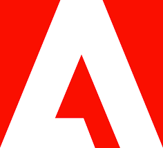

Retro Wave Run
Création d'un jeu-vidéo mobile avec Unity 3D en C#
Le projet était de réaliser un jeu type Endless Runner en 3D avec un environnement typé Rétro Wave. Le projet a été réalisé de façon a être totalement professionnel avec un système de revenus avec des Ads Google, un système de personnages à débloquer, un système de record et de partage de ses records sur les réseaux sociaux. Le jeu est disponible sur Play Store.
Temps pour le réaliser ≈ 200h
Questions fréquentes
Depuis quand est-il passionné d'informatique ?
Dès ses 12 ans, il a commencé la programmation sur le Site du Zéro (OpenClassrooms) en suivant les cours de développement Web avec HTML et CSS.
 Portfolio
Portfolio
Création de mon site Web Portfolio
Le projet était de créer un site permettant d'exposer mes différents projets et mon CV en ligne de manière créative. Le site se devait d'être créatif et interactif avec l'utilisateur. Un concept typé moteur de recherche paraissait donc adapté et le design basé sur la DA de Google semblait être pertinent et oiginal.
Temps pour le réaliser ≈ 40h
FPS Time
Création d'un jeu-vidéo pour PC avec Unity 3D en C#
Le projet est de faire un FPS multijoueur se basant sur le contrôle du temps et de son environnement. Le but étant à la fois de créer un mode versus avec différentes armes et compétences mais surtout de créer un mode coopératif en créant une histoire obligeant les joueurs à être à 2 pour réaliser l'histoire de ce mode. Le but de ce projet est aussi d'être un entraînement à la promotion sur différents réseaux sociaux afin de créer une attente autour de ce jeu (≈ 10 000 vues).
Temps pour le réaliser ≈ 130h (projet non fini pour le moment)
Find The Way
Création d'un jeu-vidéo mobile avec Unity 3D en C#
Projets réalisés : Création de sites web, mini-jeux
Skins Trackmania
Création de skins pour le jeu Trackmania avec Adobe Substance Painter et Stager
Le projet était de réaliser un jeu type Endless Runner en 3D avec un environnement typé Rétro Wave. Le projet a été réalisé de façon a être totalement professionnel avec un système de revenus avec des Ads Google, un système de personnages à débloquer, un système de record et de partage de ses records sur les réseaux sociaux. Le jeu est disponible sur Play Store.
Temps pour le réaliser ≈ 200h
Cliquez pour voir la fiche du jeu sur PlayStorePortfolio
Création de mon site Web Portfolio
Le projet était de créer un site permettant d'exposer mes différents projets et mon CV en ligne de manière créative. Le site se devait d'être créatif et interactif avec l'utilisateur. Un concept typé moteur de recherche paraissait donc adapté et le design basé sur la DA de Google semblait être pertinent et oiginal.
Temps pour le réaliser ≈ 30h
 FPS Time
FPS Time
Création d'un jeu-vidéo pour PC avec Unity 3D en C#
Le projet est de faire un FPS multijoueur se basant sur le contrôle du temps et de son environnement. Le but étant à la fois de créer un mode versus avec différentes armes et compétences mais surtout de créer un mode coopératif en créant une histoire obligeant les joueurs à être à 2 pour réaliser l'histoire de ce mode.
Temps pour le réaliser ≈ 130h (projet non fini pour le moment)
Suite Adobe
Niveau Avancé
Adobe : Première Pro, Photoshop, Substance, Substance Painter, Adobe XD
Projets réalisés : Création de sites web